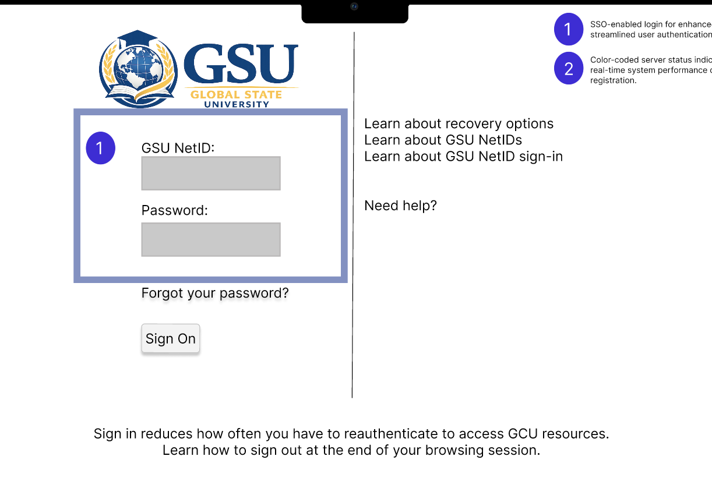
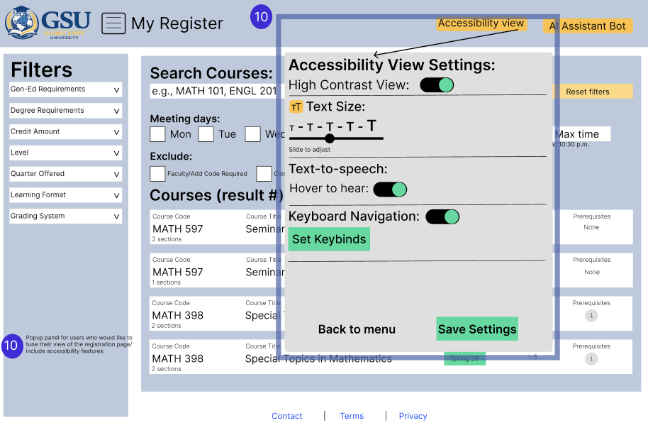

Need a dependable path to classes and waitlists.
SERVICE DESIGN / SYSTEMS THINKING · 2026
Course Registration Redesign
Designing for the student—and the system behind the screen.
A proposed redesign of university course registration that addresses student confusion, peak-time performance, and support-team workload.

01 / Challenge
More than a confusing interface
The team identified problems with slowdowns during peak registration, outdated interaction patterns, unclear guidance, and troubleshooting. These issues affect students and university staff—not only the registration screen.
Need stability and easier troubleshooting.
Need fewer avoidable registration questions.
02 / Stakeholders
Three perspectives, one service
Our stakeholder analysis considered undergraduate students, IT operations managers, and student success coordinators. This expanded the project from a visual redesign into a systems and service-design challenge.
Course discovery, scheduling, and timely registration.
Peak-traffic management and system visibility.
Guidance and indicators for students needing support.
03 / Concept
Proposed improvements
The team proposed an automated schedule builder, class recommendations, waitlist-related improvements, a peak-time queue, and clearer registration guidance. These are proposed system features—not claims of a deployed university product.
Support for comparing and building schedules.
Queue-based handling of peak demand.
Clearer states, feedback, and next steps.
04 / Systems
Thinking beyond the mockup
The wiki includes workflow and data-flow models, a feature backlog, risks, and a roadmap. We considered privacy, accessibility, operational dependencies, and how the proposed system would fit existing advising processes.
Account for screen-reader and navigation needs.
Limit exposure of sensitive student data.
AI assistance should support—not replace—advisors.
05 / Reflection
What I took away
A better interface alone cannot fix a system that becomes unavailable under load. This project pushed me to think about service reliability, stakeholder needs, and the operational side of UX.
PROJECT GALLERY
Designing for clarity and access
Explore how the proposed registration experience addresses accessibility and communicates the reasoning behind key workflows.
